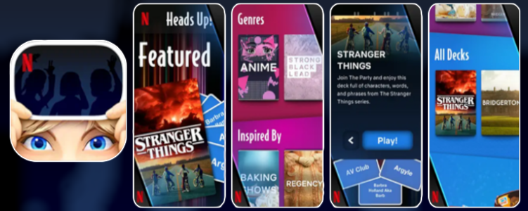
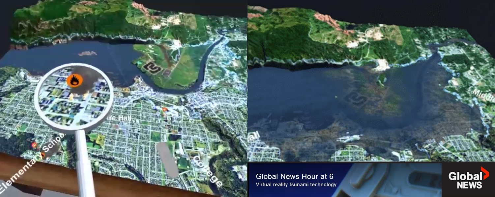

Heads Up! Netflix Edition
Gasket Games - Unity - 2022
This app is a new version of Ellen DeGeneres' Heads Up game using Netflix properties. Originally based off the Unity project from the standard game's Android version, I primarily worked on changing the UI to match the new themes and supporting the added localization features like the language switching menu.

Burning Sky
Gasket Games - Unreal Engine 5 - 2022
This open world game demo is one of Gasket's own IPs. My work was focused on the UI and audio, with my primary contributions being audio optimizations and a subsystem to handle queueing up dialogue and displaying subtitles, specifically using Audiokinetic Wwise's external audio sources. We had previously worked with an external company to setup sounds in Wwise, but my work allowed us to iterate on the dialogue audio ourselves while still having it go through the Wwise sound engine.

Minecraft Earth
Blackbird Interactive - C++ - 2020
My tasks on this involved fixing bugs and implementing UI features to match provided visual targets. The "Seasons" area was my main focus which provided a tree of things to unlock, updated periodically. In addition to C++ I also worked in the Bedrock Engine's custom UI scripting system. Although it is no longer active, I'm glad I got a chance to contribute to it while it was.

VR Tsunami
Victoria Makerspace, Ocean Networks Canada - Unity - 2018
The goal for this project was to raise awareness around tsunami preparedness by using Port Alberni as an example. My work included converting Open Street Maps data into in-game roads, populating them with vehicles, and overall game logic/controls. We demoed this at events too which led to some cool coverage.